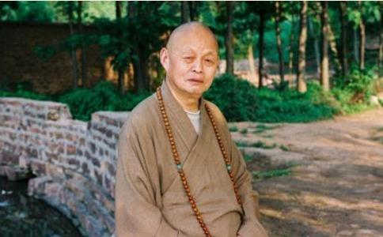

净慧长老，俗姓黄，1933年古历8月27日出生于湖北新洲，圆寂于2013年4月20日6点26分。享年81岁，僧腊67载，戒腊63夏。
长老因家庭贫困，一岁半即被父母送入尼庵，由海善、仁德二位尼师抚养，小名如意，后即在当地发蒙就学。长老（按：为叙述方便，后简称“净慧长老”为“长老”）天性颖悟，喜好读书，受寺院生活之耳濡目染，对常用佛经、早晚课诵以及楗槌法器颇为熟悉。十四岁由仁德尼师之师能庆长老尼携至武昌卓刀泉寺礼宗樵上人为师，成为沙弥，法名宗道，号净慧。旋至三佛寺，亲近大鑫太老和尚，进念佛堂，学习规矩礼仪。解放后，即参加由寺院组织的毛巾厂劳动。勤奋好学，日有所进。
1951年，赴广东乳源云门山大觉禅寺，于虚云老和尚座下受具足戒。1953年，虚老迁江西云居，修复真如禅寺，长老奉虚老之命，留任云门寺监院，时年20岁。1955年，长老因病前往云居，仍任虚老侍者，并协助当年冬天的云居传戒法会。在两度亲侍虚老之数年间，长老得以朝夕亲承虚老之耳提面命，获益良多，并深得虚老的赏识和器重。承虚老之殷勤付嘱，亦以一身而兼承禅宗五宗法脉，得赐法名：承续临济宗为第四十四世，净慧本宗；承续曹洞宗为第四十八世，净慧复性；承续沩仰宗为第九世，净慧宣道；承续法眼宗为第九世，净慧本性；承续云门宗为第十三世，净慧妙宗。
1956年中国佛学院成立，长老即被虚老送入深造，从本科一直读到研究生班，为中国佛学院首批佛学研究生。长老勤奋好学，成绩优良，对佛教的历史、教义、教规等都有较为系统深入的了解，颇得当时的师长周叔迦居士、明真法师、正果法师、赵朴初居士等人的赞许。1962年，长老因编辑《虚云和尚法汇续编》被错划为右派分子。1963年离开佛学院，辗转于京、粤、鄂等地接受劳动改造。
直至1978年才被摘去右派的帽子。这期间，长老虽然精神上倍受歧视、生活上饱受磨难，但这段经历，却使他变得更加练达、坚韧和成熟。
中共十一届三中全会之后，党的宗教信仰自由政策开始逐步得到落实，在赵朴初居士和正果法师的关怀下，长老于1979年初得以重返北京，参与中国佛教协会的各项恢复工作。1981年《法音》杂志创刊，长老担任主编一职。1982年，在中国佛教协会第四届常务事理会第二次（扩大）会议上，长老被增补为中国佛协理事。
1987年在中国佛教协会第五届代表大会上被选为常务理事。
1988年，长老应河北省民族宗教事务局之邀请，负责筹备组建河北省佛教协会，并在第一届河北省佛代会上当选为会长，同时主持柏林禅寺的重建工作。1989年，创办《禅》刊，并主编《禅宗灯录大全》。1993年，在中国佛教协会第六届代表会上当选为副会长。
住持柏林禅寺期间，长老大力倡导以“觉悟人生、奉献人生”为宗旨的“生活禅”。为了广泛地宣传这一理念，从1993年起，柏林禅寺举办了一年一度的“生活禅夏令营”活动，迄今已连续举办了19届，在教内外产生了广泛影响。1998年，长老当选为第九届全国政协委员。
从1988年开始，至2003年9月万佛楼开光，长老不辞艰苦，宵旰用心，历时十五年，赵州祖庭的复兴工作始告大成。次年，长老乃退居，将方丈之位让于弟子明海法师。
退居之后，长老又以年逾古稀之躯，应本焕老和尚之邀请，接管湖北黄梅四祖正觉禅寺。为重振东山法门，长老殚精竭力，整顿道风，恢复丛林传统，除了继续做好本老所创办的《正觉》杂志的同时，还举办了一年一度的“禅文化夏令营”，创办了双峰讲堂，与柏林禅寺遥相呼应。为了改善祖庭的生存和发展环境，长老提出了“大四祖”的理念，将四祖寺的建设与周围环境的治理以及社会的和谐融为一体，取得了良好的社会反响，得到了当地政府和民众的高度赞扬。
住持黄梅期间，长老还奋力重修湖北黄梅老祖寺、四祖寺下院芦花庵、当阳玉泉寺、度门寺、河北邢台玉泉寺、大开元寺等古老道场。每修复好一处道场，长老即刻择其有德之贤者而居之，自己则两袖清风，一衲飘然。其为教之忧患意识，其老当益壮、为法忘躯之承担精神，大有其先师虚云老和尚之遗风。
长老自幼出家，亲承虚云老和尚之教诲，对虚云和尚“四根（佛教这棵大树赖以生存和发展的四条大根——修证之根、戒律之根、经教之根、现实之根）一本（以禅宗为振兴中国佛教之根本）一枢纽（巩固古老的传统大丛林之枢纽地位，充分发挥它们的表率、辐射和引领功能）”的佛教振兴理念心有领会，又得周叔迦、明真、正果、赵朴初等良师益友之提携，在自身天赋极高及早年儒释兼修的基础上，又经过中国佛学院数年的系统学习和研究，佛学根底甚为扎实，对佛教典章制度非常熟悉。所以在恢复赵州祖庭的过程中，在寺庙建筑、僧团管理、法务活动、僧才培养、文化建设、弘法理念，以及处理寺院与地方政府和民众关系等等方面，长老皆能以超常、圆融的智慧处之，游刃有余，得心应手，如理如法，并且取得了令人瞩目的成绩。
作为一名从充满战乱和苦难的旧中国走过来的老一辈出家人，长老对中国佛教的前途和命运充满了强烈的使命感和忧患意识。正是在这种使命感和忧患意识的驱使下，1988年长老甘愿放弃了北京优裕的工作环境，应邀来到河北主持佛教工作，并负责修复赵州祖庭。白手起家，一切都得从头开始，个中的甘苦自不待言，而长老却泰然处之。长老多次讲，赵州祖庭是一块“试验田”，他来河北就是为了种好这块“试验田”。长老所说的“试验田”，就是想通过落实“生活禅”理念，来建设一个高素质的清净僧团，为中国佛教探索出一条全面振兴的路子。经过十多年的惨淡经营，柏林禅寺已经全面修复，并成为我国北方对外佛教文化交流的重要窗口，吸引了越来越多的教内外、海内外佛教信众和有识之士前来参学。长老到黄梅之后，亦将赵州祖庭的复兴经验，熟练地运用于黄梅禅的振兴当中。经过十年的努力，长老之门下，现已形成了“北有赵州，南有黄梅”、南北呼应、资源共享、相辅相成的健康发展格局。
长老为人谦和，忍辱负重，广结善缘。无论是在中国佛教协，还是在赵州柏林禅寺、黄梅四祖寺、邢台玉泉寺，他所接触人物的范围很广，所应对的事务头绪繁复，但他都能从容应对，各方面的关系都处理得非常好。长老对待上级不卑不亢，接待外宾彬彬有礼，对待尊长恭敬有加，对待后学热情关怀，对待同事团结合作，对待下级不摆架子，对待名人和财主不失本分，对待基层信众亦方便接待，平易近人，对于误解、仇视和攻击自己的人亦不失礼节，乃至以德报怨。无论是在中国佛教协会，在《法音》杂志社，还是在河北、湖北，长老之所以能够把方方面面的关系处理得很好，事业干得比较顺利和成功，跟长老心量广阔、处事圆融有极大的关系。
在祖师和长老的道德感召之下，每年慕名前来赵州黄梅，礼祖、参学、访问、视察的各界人士络绎不绝，柏林禅寺和四祖寺已经成为中国大陆对外文化交流的重要窗口。据初步统计，柏林禅寺和四祖寺平均每年接待海内外各类参访团有三十多个，除国内和港奥台之外，还包括韩国、日本、新加坡、缅甸、尼泊尔、泰国、马来西亚、澳大利亚、德国、法国、英国、奥地利、瑞士、美国、加拿大等四十多个国家。
在热情接待来海内外来访的同时，长老亦充分利用一切善缘，主动走出国门，把中国佛教的优秀思想和传统传播到国外，不仅推动了中国与世界各国人民的友好交往，维护了地区和平稳定，扩大了中国佛教在海外的影响，同时也宣传了中国共产党的宗教信仰自由政策。
长老幼读儒书，酷爱诗文；长习释典，深通经教，且文思敏捷，落笔成章。着文作诗，不但规矩悉备，且引经据典，深入浅出，内容丰富，说理透彻，颇有恣肆汪洋之概。长老之著作已经公开出版的有《双峰禅话》、《入禅之门》、《生活禅钥》、《坛经一滴》、《中国佛教与生活禅》、《做人的佛法》、《心经禅解》、《何处青山不道场》、《经窗禅韵》、《禅在当下》、《生活禅语》等。